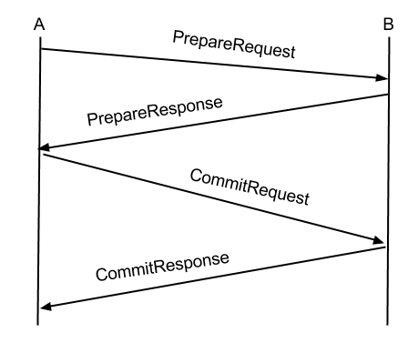
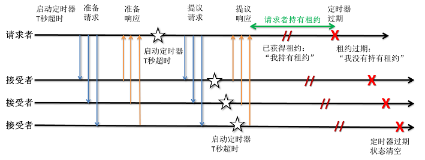

对于PaxosLease的个人理解 1
Thu, Dec 19, 2013Paxos是分布式解决数据一致性的算法，而PaxosLease是Paxos中的一个子集，用于在集群中选择出一个节点作为master
最近因为项目需要，实现了一下PaxosLease，代码放在Github上
计划用两篇blog，分别记录下自己对PaxosLease的理解，以及对PaxosLease应用时的一些变化。
这篇是我对PaxosLease的个人理解，如有任何bug/改进的建议，欢迎comment
首先，定义一下问题场景：有N个节点组成一个集群，需要从其中选出一个master。（其中可能遇到节点间传输的信息延迟/丢失，节点离线，网络脑裂等等状况）
在这个定义中，先要解决如何定义“选出一个master”，有以下几种可能
- 仅有master节点知道自己是master，其他节点只知道自己不是master，而不知道谁是master
- 所有在线节点都知道谁是master，离线节点上线后要等待下次选举
- 所有节点都知道谁是master，离线节点上线后要立刻学习谁是master
PaxosLease选择的是第一种方式（在此只讨论没有Learner的情况，有Learner的情况可以实现另外两种情况），这种方式满足现在的项目需要
这一个部分的结论：在以上的定义下，PaxosLease需要满足一个*不定式*：在同一时间，集群内至多有一个节点认为自己是master
要在多个节点达成一致，最通常的想法是二段提交（2-phase commit，2PC），经典2PC步骤是：
- 某节点A向其他所有节点发起PrepareRequest（准备请求）
- 某节点B收到节点A的PrepareRequest，经过状态检查，将自己的状态置为PrepareReady（表示可以接受A的PrepareRequest）
并向A发送PrepareResponse（准备请求的回复） - A收到其他节点发来的PrepareResponse，当满足*某个条件*时，A认为集群整体同意了他得PrepareRequest。
于是A向其他所有节点发出CommitRequest（提交请求） - 节点B收到A的CommitRequest，且检查到*当前状态是为A准备的状态*，则向A发送CommitResponse（提交回复）
- A收到其他节点发来的CommitResponse，当满足*某个条件*时，A认为集群已经完成了提交

但经典的2PC没有以下解决的问题：
- 如何处理网络脑裂
- 如何解决master突然离线，比如网络故障
- 如何面对选举过程中通信可能发生的延迟和中断
- 是否会发生动态死锁
这一部分先解决网络脑裂的问题。比如有5个节点的集群，分割为[1,2]和[3,4,5]，那么在[1,2]子集群中不能选举出master，而在[3,4,5]子集群中必须要选举出master。若脑裂前master落在[1,2]，那么租约到期后，[1,2]不能选举出master
解决方案是：指定2PC步骤中的*某个条件*为“收到集群中超过集群节点数一半的节点（多数派）的正反馈”。那么[3,4,5]子集群可能选出master，而[1,2]由于只有2个节点，小于ceil(5/2) = 3，没法选出master
在此，我们称一个集群中，超过集群节点数一半的节点集合为多数派
这一部分将解决master突然离线的问题。根据*不变式*，除了master本身，没有节点知道谁是master。在这种情况下，如果不做点什么，集群就不会再有master了
解决方案是使用租约，即谁持有租约谁是master。
由于是多数派选举master时，选举出master时，多数派的每个节点都会开始一个定时器，时长和租约时长相同
于是在租约过期前，多数派的定时器都不会超时，多数派不会参与投票，即集群选不出新的master
那么在租约过期后，多数派的定时器都超时，可以投票，集群就可以重新选举出master
整个过程与离线的master没有任何交互，也就可以在master离线时选举出新的master
且整个过程中，租约到期前（多数派定时器超时前），集群不会有两个master同时存在，即满足不定式
以上*等到租约过期*的做法有一个前提，即所有节点都知道统一的租约时长 （此处是时长，而不是过期时间。PaxosLease并不要求各个节点时钟同步，因此必须使用时长）。这是时长往往是静态配置，而不是动态协商的
这一部分将解决选举过程中通信可能发生延迟。
发生延迟意味着A-B已经进入了下一轮投票，C可能才完成上一轮投票，C的反馈可能影响到这一轮投票结果。
此处PaxosLease引入了投票ID（PaxosLease称ProposeId，后面会统一名称的）的概念，投票ID对于某一节点A，在全局是单调递增的。常用的投票ID结构为<投票轮数 | 重启计数 | 节点ID>（“|”为字符串拼接），这个ID可以被持久化存储，即新一轮投票或节点重启时投票ID都会单调递增。
有了投票ID，那么节点可以只响应本轮的反馈，而不受其他轮的干扰。
这一部分将解决选举过程中通信可能发生中断。
发生中断意味着2PC某阶段会一直等待多数派的反馈，但反馈都丢失了，于是选举可能被无限期拖延下去。很容易得出解决方案：设置超时时间。即在2PC每一个阶段都设置超时时间，若超时，则回退重新开始新一轮的2PC
这一部分将讨论如何解决动态死锁
首先说明何为动态死锁，比如有4个节点的集群[1,2,3,4]，1和4同时请求自己为master，1的request发给2，而4的request发给3，没有任何一方获得多数派，于是进入新的一轮，以上状况重复出现，陷入死循环，没法选出master
观察这个问题的症结在于，2收到1的prepare request后，进入PrepareReady状态，将不再接受4发来的请求。这样[1,2]和[3,4]不断对撞，陷入死锁。
解决方案是PaxosLease引入了“不稳定”的PrepareReady，即2进入为1准备的PrepareReady状态后，如果收到4的PrepareRequest，且这个投票ID大于来自1的PrepareRequest的投票ID，则2转而进入为4准备的PrepareReady
可以看到投票ID代表了优先级，也就能理解之前要求某节点的投票ID单调递增的理由了
需要说明的是，上述做法只是大大降低动态死锁的概率，但仍然可能存在小概率的动态死锁，即两个节点1和4不断增大投票ID且在2和3进入Commit之前不断抢占2和3，形成竞争，可以引入随机的等待来规避这个小概率事件
在此，将上面描述的名词对应到PaxosLease算法的术语上
- 租约 = lease（租约）
- 投票 = propose (提案)
- 发出request的节点 = proposer
- 接受request，发出response的节点 = accepter
- CommitRequest = ProposeRequest
- CommitResponse = ProposeReponse
- 投票ID = ProposeID
之后将使用术语
以上，是出于个人理解，来理解PaxosLease的几个重要元素：
- lease
- propose
- ProposeId
- 两阶段的超时设置
- 多数派形成决议
一些实现上的问题会在下一篇blog讨论
再次讨论不变式
在某一时刻，集群中最多存在一个Proposer，知道自己获得了租约。
此时，多数Accepter知道在*某一个时刻*前某个提案（AcceptedProposeId）是生效的。其他Proposer了解到多数Accepter都有AcceptedProposeId，则其不能获得租约。
这里说明一下上句中的*某一时刻*。借用参考[1]中的图

可以看到Proposer和Accepter间有时间差，即某一个时刻*指的是当前Accepter定时器超时的时刻（可能晚于Proposer上租约到期的时刻），但这并没有影响*不变式*成立。即在满足当前不变式时，不要求各个节点时钟同步*
以上是我个人的理解，如有不妥，烦请看官comment
建议此时参看文末的参考文献和Keyspace源码。之后请期待下一篇：实现PaxosLease中的一些问题和解决
顺便吐个槽，我没有数学天赋和算法天赋，也实在没兴趣下苦工，实在不够进取。罪过罪过。
参考文献
[1]【译】PaxosLease：实现租约的无盘Paxos算法
[2] Keyspace源码